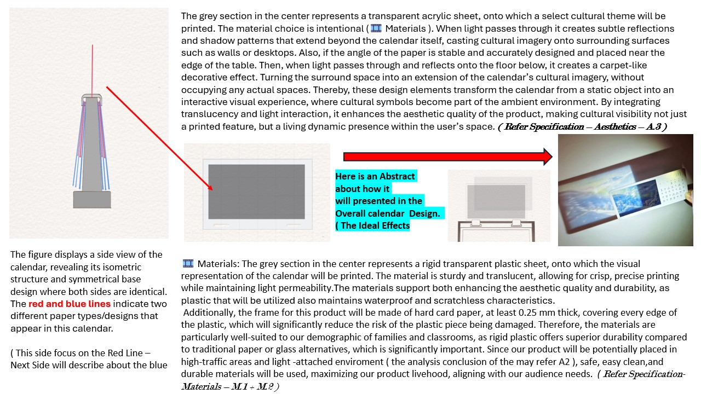
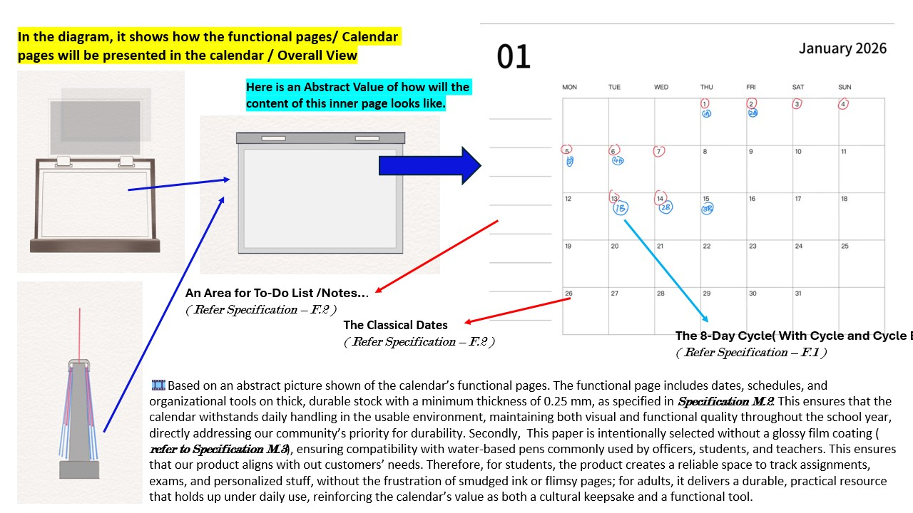

What the research showed
Function and usefulness were the strongest priorities.
Therefore the calendar keeps the 10-day school cycle, A/B rotation, school dates and cultural dates inside the monthly view.
A student-led Creativity + Service project
We are transforming the cultural knowledge shared by the SWIS community into a physical calendar and a free, QR-connected digital archive.
01 Calendar layout prototype. Final school dates and artwork will be added later.
“Are the cultures carried by members of our community actually visible in daily campus life?”
01 · The community need
SWIS brings together students, teachers and staff from many cultural backgrounds. Yet cultural identity is not always visible in the materials and spaces people encounter every day.
Instead of deciding what representation should look like on our own, we began by asking the community about the festivals, landmarks, clothing, language, literature and stories that matter to them.
02 · Listening before designing
Each step produces evidence and changes what we do next.
Observe the limited everyday visibility of cultural identity within campus materials.
Contact school leadership and prepare a whole-school message.
Gather digital responses and extend the conversation through paper surveys.
Connect cultural responses to visual elements, stories, language and monthly themes.
Invite cultural representatives to review content while the calendar and museum are developed.


Anonymised community engagement or survey-distribution photograph.
03 · Research translated into design
Insights from our school-wide research, Criteria Bii design specifications and marketing plan were converted into visible design decisions.
What the research showed
Therefore the calendar keeps the 10-day school cycle, A/B rotation, school dates and cultural dates inside the monthly view.
What the research showed
Each month includes writable date cells plus space for tasks, reminders, an exam tracker and reflection.
What the research showed
Cultural motifs appear with low opacity, while the cream writing surface, warm colour palette and clear hierarchy protect usability.
What the research showed
Every month will use corresponding language, at least two researched cultural elements and review by a cultural representative.
Research basis: community survey findings, Criteria Bii design specifications and the project marketing plan. The original 8-day proposal has been updated here to SWIS’s current 10-day cycle.
04 · School calendar prototype
This February sample translates the reference layout into a school-ready format. Official SWIS dates and final cultural artwork will replace the sample content.
F E B R U A R Y
Cycle days remain visible inside each school-day cell.
Two calm colours separate the timetable rotations without overwhelming the page.
Large cells support reminders, deadlines and classroom use.
Language, low-opacity motifs, a short text and a QR code extend the monthly theme.
Layout prototype only — the coloured dates and timetable labels are examples, not the official SWIS 2027 calendar.
05 · Walkable digital museum
A QR code on the physical calendar will lead to a free, three-dimensional cultural space. Visitors can walk through the gallery, approach artworks and open each story.
Building the museum…
Interactive prototype
Walk through a modelled exhibition hall, approach the framed works and press E to discover their stories.
The in-app preview has WebGL switched off. The full website still contains the modelled gallery and interaction controls; the exhibition directory below remains available here.
Exhibition directory
The cards remain as an accessible alternative and as a quick way to preview every culture.
Exhibition
Exhibition
Exhibition
Exhibition
Exhibition
Exhibition
Exhibition
Exhibition
Exhibition
Exhibition
Exhibition
Exhibition
Prototype exhibition
Each final gallery will combine original artwork, cultural meanings, language, community voices, sources and an accuracy-feedback route.
06 · CAS evidence
The evidence is organised around the learning outcomes selected for this project—not around every possible CAS outcome.
We identified a need, proposed a response, contacted school leadership, designed two forms of community engagement and developed a staged plan for creation, validation and evaluation.
The project depends on the combined knowledge of two student leaders, school leadership, community contributors and cultural representatives.
Beyond the original coursework
The MYP Design project provides the initial research and design foundation. The CAS project is the extended community collaboration, implementation, digital access, cultural validation and impact evaluation developed beyond the assessed course requirements.
06 · Current stage
Need identified and community research conducted.
Concept, specifications, roles and action plan established.
Awareness, engagement, validation and prototype development.
Campus implementation, feedback and project handover.